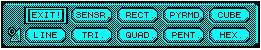
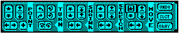
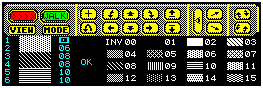

The following details the shortcut icons for the Environment Editor and the 128K Editor. Descriptions of the shortcut icons for the condition editor duplicate functions from the menus. Refer to the relevant menu headings for details.
Name: GLOBAL
Function:
To bring up a list of the Global Objects already
defined within the system.
Response:
A list of predefined objects in the GLOBAL area
will be displayed, each followed by a + or - symbol. The + symbol
denotes that the object is included within the current area and
- denotes it is not included.
Action:
Position the cursor over the desired object
and press the fire button (or 0 key) to either select + or -. The
fire button (or 0 key) will toggle between the + or - symbols.
Response:
Any Global Objects selected with a + symbol
will appear within the current area.
Name: COPY
Function:
Create a duplicate of a specified object.
Response:
A list of objects will be displayed.
Action:
Select the object from the item selector.
Response:
The new object will be created in the View
window.
Name: CREATE
Function:
Create a new object in the current area.
Response:
A panel (see figure 4) will be displayed over
the Shortcut icons showing the type of object available.
Action:
Select an object type.
Response:
The new object will be created within the
View window

Name: EDIT
Function:
Edit a specified object.
Response:
A list of existing objects within the current
area will be displayed.
Action:
Select an object in the usual manner.
Response:
A new bank of icons (see figure 5)
will be displayed over the Shortcut icons. The icons are split
into five groups:

Name: SHADE
Function:
To shade a selected object.
Response:
A list of current objects will be displayed.
Action:
Select an object for shading in the usual manner.
To colour an object select the side you wish to shade with the cursor.
By highlighting the values to the right of the shaded rectangles
numbered 1 to 6 (depending on which type of object you wish to shade).
These values will correspond to the value of the shade, shown as
16 shaded boxes numbered 0 to 15 on the right hand side of the panel.
Note:
The first shade is INVISIBLE and as such can be
very useful for creating special effects and saving time when
sides of an object will never be visible to the player by making
them INVISIBLE.

Name: DELETE
Function:
To delete a specified object from memory.
Response:
A list of objects will be displayed in the
item Selector.
Action:
Select an object from the Item Selector in the
usual manner.
Response:
The object will be deleted from memory.
Note 1:
Entrances may also be deleted from memory
using this function. Just select the entrance from the Item Selector
in the usual way and the selected Entrance will be deleted.
Note 2:
This operation is irreversible, so use with care!
Name: ATTRIBUTES
Function:
View the position and status of a specified
object. The object's status and initial status can be altered.
Response:
A list of objects in the current area will be
displayed.
Action:
Select an object from the list.
Response:
A Dialogue Box will appear showing various
information about the selected object; TYPE, NAME, SIZE, POSITION,
CURRENT STATUS, INITIAL STATUS.
CURRENT STATUS alters the status of the object between VISIBLE, INVISIBLE and DESTROYED. An invisible object may be made visible at some other point in the environment whereas a destroyed object is gone until the environment is restarted using RESET.
INITIAL STATUS sets the status of the object when the environment is RESET, either VISIBLE or INVISIBLE.
Note 1:
SENSORS have a range (of 0-255) and speed (in
tenths of a second). These can be changed via ATTRIBUTES. A speed
of 0 means that it will not shoot.
Note 2:
Sensors do not have a direction and when
off screen will not be obscured by other objects so they can fire
through walls etc. To overcome this it is best to use a different
form of check before activating a sensor such as a collision with
the floor around the sensor.